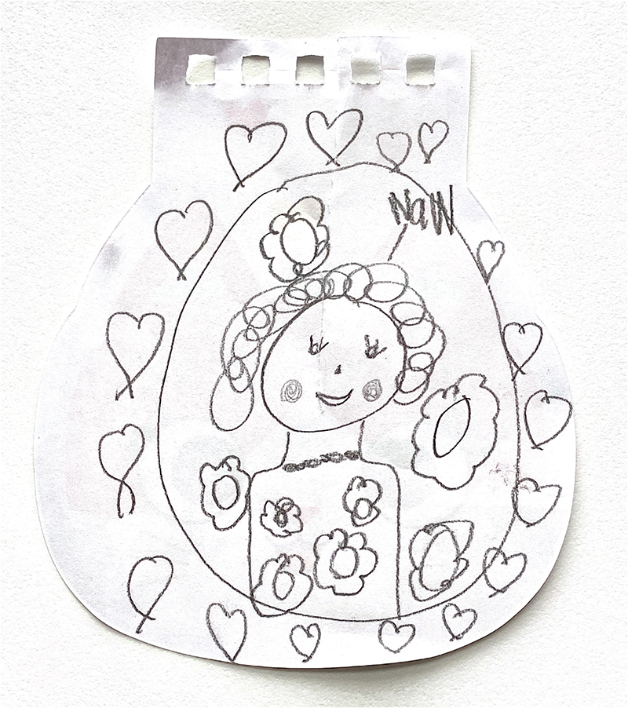

A little site to remember my wonderful Nan 💝
I remember Nan
I remember going to pick sunflowers with Nan in Narrabri. She loved sunflowers and it made her happy.
I remember discussing our mutual love for history, all things Egypt, war films and documentaries.
I remember every time Michael Bublé released an album I would rush to the shops to buy it for her so she could listen to it. She loved all things jazz.
I remember the farm at Hoxton park. Us kids used to go exploring in the bushland.
I loved going into the wash room. I loved the bird cage filled with all the birds. The big picture of the cowboy hanging near the toilet. The picture had a badge that would light up red when someone was in there.
I remember Nan's white Christmas tree and all her colourful lights.
I remember helping Nan with her TV. She had this amazing huge flat screen TV in her room with a Blu-ray player. But for some reason, whoever set it up didn’t use HDMI, but some old cable.
So I walked down to Westfield's and bought a new cable for her as well as a couple of blurays. I think I got her Inception and Avatar.
I hooked up the tv using the new cable and popped in avatar.
Nan was in awe of the quality of the Blu-ray. She said "Who needs 3d! This is my 3d here!"
From then on from time to time I would buy her some new movies. I purchased her Skyfall on Blu-ray, she loved that!
I remember thinking how amazing it was that Nan fully embraced the digital age. She loved her iPad. She loved the facetime calls and the updates about her great grandkids.
I remember the day I gave Nan an account to Family Spotify. She said it was her most cherished thing. She loved that she could discover new music and put it on the background all day. Every time we spoke she brought up Spotify and how grateful she was.
A most cherished message I received out of the blue from Nan (unedited):
This is just another thank you ,,, you are so often in my thoughts ❤️ with me it’s not “ out of sight; out of mind “ when I’m home you are always with me , how can I not SPOTIFY is on as soon as I wake . I so appreciate it , this is not sucking up to you : love you & your beautiful family so precious ❤️😘👍::: just sayin 😍your ever lovin nan
I remember sharing with Nan how I was about to take my then fiancé, now wife, Jesse to manly to propose. She was beyond excited.
I remember seeing Nan, Julie, Darren and co as our first visitors when Charlie was diagnosed with leukemia. I cherish those visits so much. At the time every day was hard. So seeing family was a huge breathing moment.
I remember Nan's love of the royalty. We would talk about all things modern and old when it came to the royals.
I remember once we were talking about tv's and I mentioned that I had this tiny old box. I was living on my own in a tiny flat and didn’t have much money to my name. So Nan, right before I left to go home she handed me some cash. Enough to purchase a new flatscreen. I was blown away and tried not to accept. Eventually I let her give me the money. It meant as much to her to give me the money as it was for me to get a new tv. I felt guilty of course, but it bought Nan a huge amount of joy being able to give.
One of my most cherished memories as a kid was seeing Nan at Christmas. We drove hours and hours to come from our home in the bush. We would go into the kids room and she had this old tape. On the tape was a bunch of old Disney Christmas shows. I remember just feeling joy - being at Nan's and watching that tape.
I remember having Nan at grandparents day. Showing off what we did at school. She always took a huge interest in what us kids were doing. As she didn’t get to see us as much as we lived so far away from her.
I remember we shared our utter hatred for summer. #winterisbest
I remember Nans Meatballs, ham and cheese toasties & garlic bread.
I remember Nan's chocolate Cake with huge amounts of ganache.
I remember Nan's forehead on Facetime calls. I miss her emoji spam filled messages (see example above 😉).
I remember the joy on her face when she saw Charlie walking again after his long stint in hospital.
I remember that she let Jess recover after her surgery at her place.
I remember recently when Nan let Jesse use her kitchen so we could cook for her. It was a huge honour. Nan always loved to serve so for her to let someone else serve her was a big deal.
I remember she bought me shoes once. Black converse All-stars 2004. I still have them and wear them to this day.
I remember taking her to coffee club with my family for coffee and lunch.
I remember her love, her hugs, he wanting to serve and never let you walk away hungry. Her generosity and kindness.
She was a pillar. She was our safe haven.
-
Nan,
I miss you.
It hurts. Today hurts. I feel angry, sad, devastated.
I've never lived in a world when you were not around. I don’t know how to move forward.
I know that you will want me to though. You will think it silly if I don’t. So I will try and move forward to honour you. I will endeavour to reflect the kindness you showed me my entire life.
I'm so glad you got to see your great grandchildren.
I will tell my kids about you legacy, your life, our stories. You will not be forgotten.
I'm glad you are in a place where you can breath again. You can walk free of pain and suffering.
I love you and miss with all my heart.
Your grandson, James.

My daughter, Abbie (7) drew this while I was sobbing just after I received the call from my Dad that Nan had passed.Abbie had only seen Nan a couple of times and has only just begun drawing, but she made this wonderful picture of Nan.
She did all she could to help me feel better and im so thankful God gave me such an amazing family to be a part of.